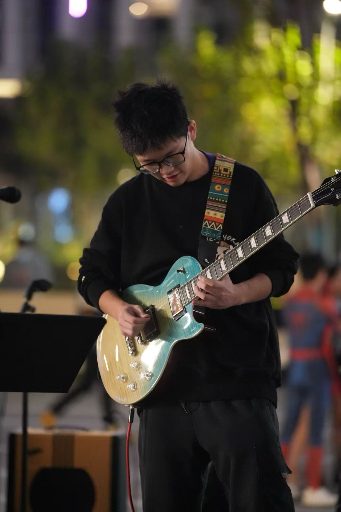
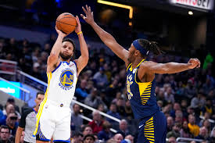
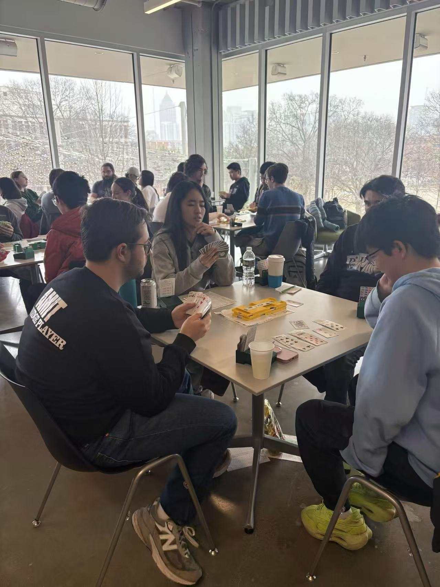

Music

I was the lead guitarist of Nameless, a band at NYU Shanghai. I am now interested in music production and sound engineering.
Music is an essential part of my life — it allows me to express creativity beyond the world of code and equations. Whether performing live on stage or jamming in a practice room, I find joy in every note.
Basketball

Basketball is my go-to sport for staying active and building team spirit. I enjoy playing pickup games with friends on campus and following the NBA season closely.
Bridge

I am an avid bridge player and enjoy the strategic depth this classic card game offers. Bridge combines logic, probability, and partnership communication — skills that resonate with my background in mathematics. I play regularly with friends and have participated in tournaments .